Best AI Website MakerTe ubicas debajo del globo y después de algunos segundos, la mixtura cae de forma automática. Tus invitados aplauden y están emocionados y esto queda, entre los mejores recuerdos de las personas que estuvieron presentes.
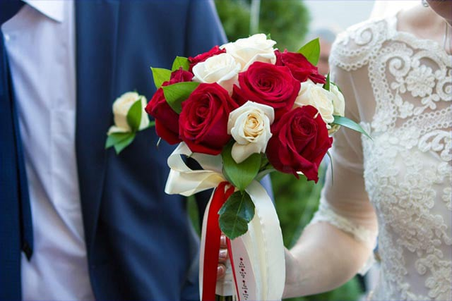
Para todo tipo de eventos sociales: cumpleaños, matrimonios, etc.
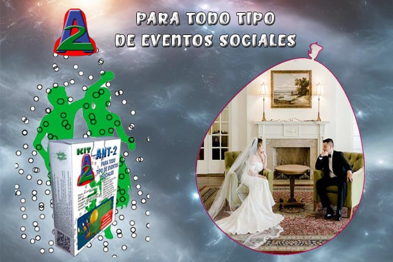
Marca la diferencia, haz que tu fiesta sea inolvidable.
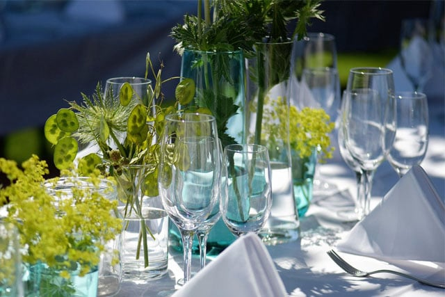
Que tus invitados mantengan el recuerdo por siempre.
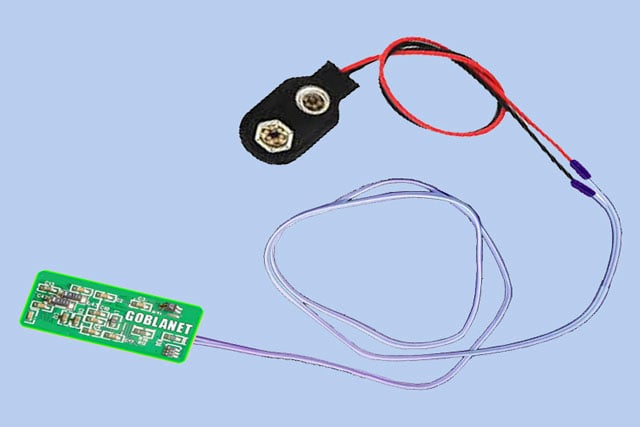
Este dispositivo se utiliza para amenizar una fiesta, el interior del globo contiene mixtura. En un determinado momento, mediante la conexión de la batería, El globo hace explosión derramando la mixtura sobre el(la) agasajado(a) o agasajados.
FUNCIONAMIENTO
Ahora en el momento indicado, la persona responsable de la activación, solo tendrá que colocar la batería en su conector y el globo hará explosión.
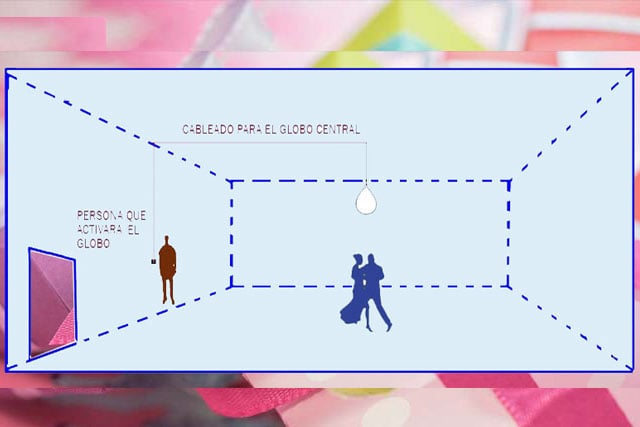
Ahora el cable debe instalarlo por el sector que usted definió, puede asegurarlo, utilizando a ciertos intervalos la cinta scotch, chinches o grampas.
En la parte central de local de fiestas, posiblemente haya un foco, hasta ahí puede llevar el cable y solo debe quedar 30 cms. de cable para asegurar ahí el globo.
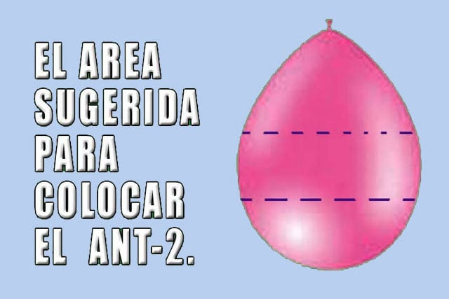
Ahora, puede inflar el globo que contiene la mixtura y asegurarlo al dispositivo con cinta scotch
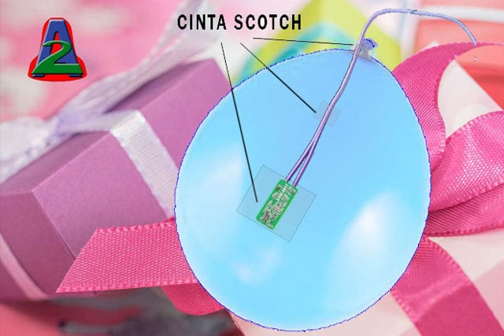
Aquí se observa como colocar el dispositivo. Por ultimo asegure la boquilla del globo al cable con cinta scotch.
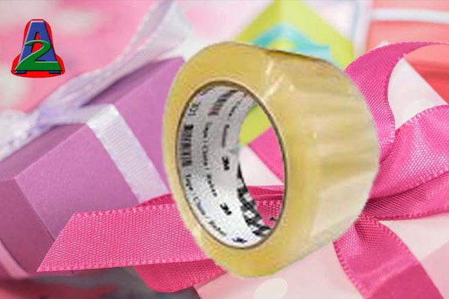
La cinta scotch puede utilizarlo también para cubrir los empalmes, si es que no cuenta con cinta aislante.
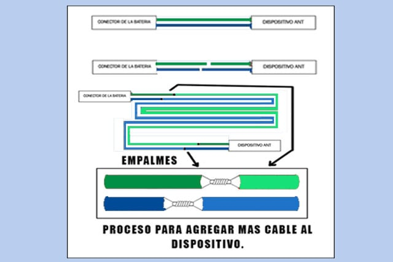
Haga el corte escalonado como se muestra en la imagen, un cable lo corta en un punto y el otro cable puede cortarlo unos 5 cms más a la derecha o izquierda.
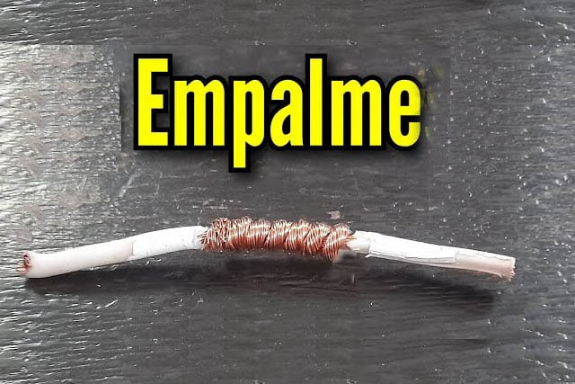
Con un estilete quite el plástico de las puntas del cable. Ahora realice los 4 empalmes. Por ultimo cúbralos con cinta scotch , para evitar cortocircuitos.
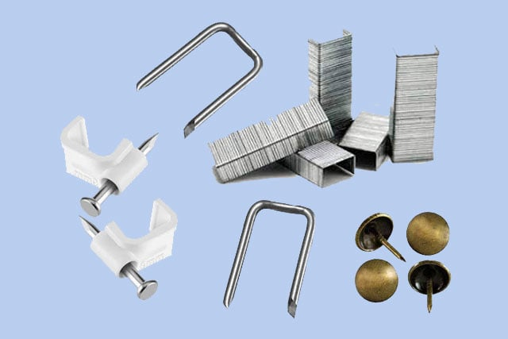
Ahora el cable debe instalarlo por el sector que usted definió, puede asegurarlo, utilizando a ciertos intervalos la cinta scotch, chinches o grampas.
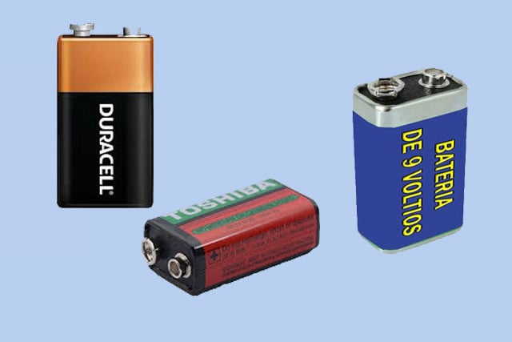
Este componente hace que un globo explosivo sea portatil..
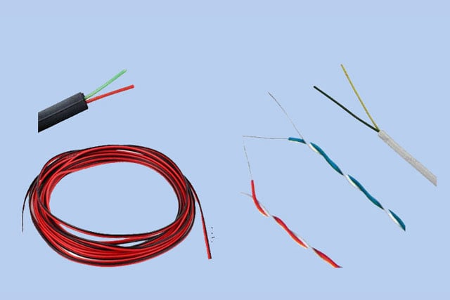
Para ampliar la longitud del cable , se puede utilizar alambre # 18 o 20 , también puede utilizar cable telefónico.
Best AI Website Maker